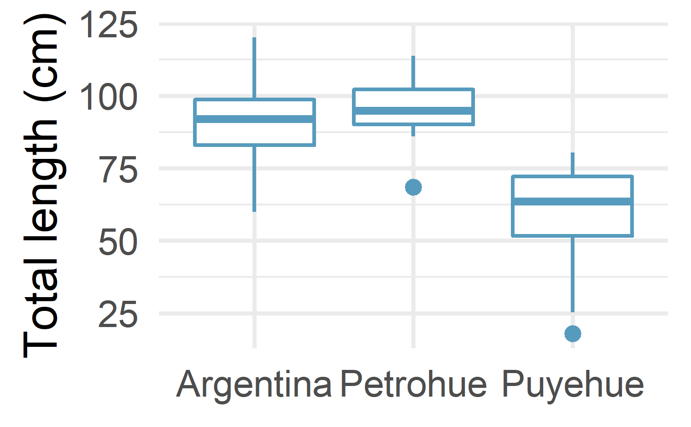
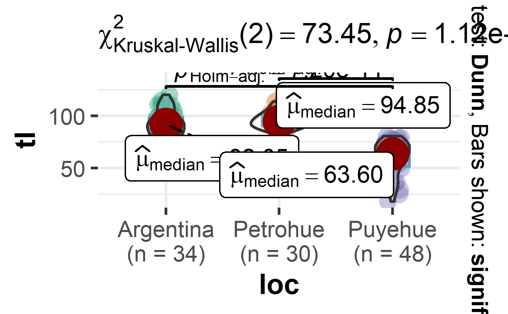

#> Rows: 112
#> Columns: 3
#> $ tl <dbl> 120.1, 115.0, 111.2, 110.2, 110.0, 109.7, 105.0, 100.1, 98.0, 92.1~
#> $ w <dbl> 17.9, 17.2, 16.8, 15.8, 14.3, 13.8, 12.8, 11.7, 12.8, 14.8, 9.7, 7~
#> $ loc <fct> Argentina, Argentina, Argentina, Argentina, Argentina, Argentina, ~17 Kruskal-Wallis test, or the nonparametric version of the ANOVA
17.1 Introduction
In a chapter xxx, we learned how to do an ANOVA in R to compare three or more groups. Remember that, as for many statistical tests, the one-way ANOVA requires that some assumptions are satisfied in order to be able to use and interpret the results. In particular, the ANOVA requires that residuals follow approximately a normal distribution.1 .Luckily, if the normality assumption is not satisfied, there is the nonparametric version of the ANOVA: the Kruskal-Wallis test.
In this chapter, we learn how to perform the Kruskal-Wallis test in R and how to interpret its results. We will also briefly learn how to do post-hoc tests and how to present all necessary statistical results directly on a plot.
17.2 Data
The data we are going to use is chinookdataset, which found in FSA package. This dataset is a dataframe with 112 observations of lengths and weights for Chinook Salmon from three locations in Argentina.
Lets get the summary statistics of the total length
#> # A tibble: 3 x 10
#> loc n min max median iqr mean sd se ci
#> <fct> <dbl> <dbl> <dbl> <dbl> <dbl> <dbl> <dbl> <dbl> <dbl>
#> 1 Argentina 34 59.9 120. 92.0 15.8 91.3 14.0 2.40 4.88
#> 2 Petrohue 30 68.5 114. 94.8 12.1 95.9 9.24 1.69 3.45
#> 3 Puyehue 48 18 80.5 63.6 20.4 59.4 16.0 2.31 4.66Then, we make a boxplot that compare the total length of Chinook collected from the three locations

18 Kruskal-Wallis test
The Kruskal-Wallis test allows to compare three or more groups. More precisely, it is used to compare three or more groups in terms of a quantitative variable. It can be seen as the extension to the Mann-Whitney test which allows to compare 2 groups under the non-normality assumption.
In the context of our example, we are going to use the Kruskal-Wallis test to help us answer the following question: Is the total length of the chinook different between the three locations?.
The null and alternative hypotheses of the Kruskal-Wallis test are:
H0H0: The total length of chinook are equal for the chinook sampled at three locations
H1H1: The total length of chinook are not equal for the chinook sampled at three locations
18.1 Assumptions
First, the Kruskal-Wallis test compares several groups in terms of a quantitative variable. So there must be one quantitative dependent variable (which corresponds to the measurements to which the question relates) and one qualitative independent variable (with at least 2 levels which will determine the groups to compare).2
Second, remember that the Kruskal-Wallis test is a nonparametric test, so the normality assumption is not required. However, the independence assumption still holds.
This means that the data, collected from a representative and randomly selected portion of the total population, should be independent between groups and within each group. The assumption of independence is most often verified based on the design of the experiment and on the good control of experimental conditions rather than via a formal test. If you are still unsure about independence based on the experiment design, ask yourself if one observation is related to another (if one observation has an impact on another) within each group or between the groups themselves. If not, it is most likely that you have independent samples. If observations between samples (forming the different groups to be compared) are dependent (for example, if three measurements have been collected on the same individuals as it is often the case in medical studies when measuring a metric (i) before, (ii) during and (iii) after a treatment), the Friedman test should be preferred in order to take into account the dependency between the samples.
Regarding the homoscedasticity (i.e., equality of the variances): As long as you use the Kruskal-Wallis test to, in fine, compare groups, homoscedasticity is not required. If you wish to compare medians, the Kruskal-Wallis test requires homoscedasticity.3
In our example, independence is assumed and we do not need to compare medians (we are only interested in comparing groups), so we can proceed to how to do the test in R.
Note
The normality assumption is not necessary for KWANOVA.
18.2 In R
The Kruskal-Wallis test in R can be done with the kruskal.test() function:
#>
#> Kruskal-Wallis rank sum test
#>
#> data: .
#> Kruskal-Wallis chi-squared = 256, df = 2, p-value <2e-16The result of the Kruskal-Wallis test indicate that we reject the null hypothesis and we conclude that the total length of chinook are not equal a the three locations (p-value < 0.001).
Note
if the p-value was larger than the significance level α=0.05α=0.05: we cannot reject the null hypothesis
Post-hoc tests
We have just showed that at least one species is different from the others in terms of flippers length. Nonetheless, here comes the limitations of the Kruskal-Wallis test: it does not say which group(s) is(are) different from the others.
To know this, we need to use other types of test, referred as post-hoc tests (in Latin, “after this”, so after obtaining statistically significant Kruskal-Wallis results) or multiple pairwise-comparison tests. For the interested reader, a more detailed explanation of post-hoc tests can be found here.
The most common post-hoc tests after a significant Kruskal-Wallis test are:
Dunn test
Conover test
Nemenyi test
Pairwise Wilcoxont test
The Dunn test being the most common one, here is how to do it in R. This method is an extension of the Kruskal-Wallis that compare if there is statistical difference between groups. For this illustration, p-values are adjusted with the Holm method.
#> Comparison Z P.unadj P.adj
#> 1 Argentina - Petrohue -1.17 2.42e-01 2.42e-01
#> 2 Argentina - Puyehue 6.62 3.60e-11 7.20e-11
#> 3 Petrohue - Puyehue 7.63 2.27e-14 6.81e-14It is the last column (the adjusted p-values, adjusted for multiple comparisons) that is of interest. Based on the dunn test output, we conclude that:
Argeinta and Petrohue differ significantly (p < 0.001)
Argentina and Puyehue differ significantly (p < 0.001)
Petrohue and Puyehue differ significantly (p < 0.001)
Therefore, based on the Dunn test, we can now conclude that total length of chinook salmon are statistically different in the three location that were sampled.
18.3 Conclusion
statistical rich plots are becoming popular and ggstatsplot packages in R offers that ability. For instance, we learn how to use ggbetweenstats function from within the ggstatsplot package to compute KWANOVA in R:

The histogram shows the distribution of the scores and results of the test is shown in the title of the plot. As you can see, results of the test are the same, that is, there is not enough evidence in the data to conclude that total length are significantly different from 81 (pp-value = 0.67).